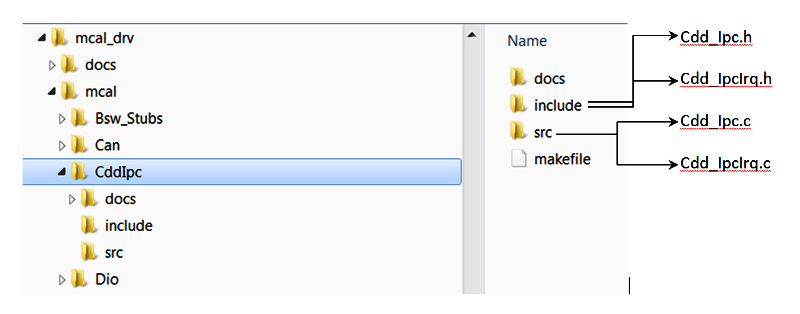

Introduction
Overview
The figure below depicts the AUTOSAR layered architecture as 3 distinct layers, Application, Runtime Environment (RTE) and Basic Software (BSW). The BSW is further divided into 4 layers, Services, Electronic Control Unit Abstraction, MicroController Abstraction (MCAL) and Complex Drivers.
MCAL is the lowest abstraction layer of the Basic Software. It contains software modules that interact with the Microcontroller and its internal peripherals directly. Inter Processor Communication (IPC) driver is part of the Complex Device Driver (block, show above). Below shows the position of the CDD IPC driver in the AUTOSAR Architecture.
AUTOSAR Architecture – CDD IPC MCAL
- Module ID shall be 255
- Vendor ID shall be 44
- Instance ID shall be 0
Cdd IPC Overview
CDD IPC primarily used for communication with other cores on the SoC. This implementation relies on mailbox and shared memory to establish communication channel.
Shared memory holds the messages that requires to be transported and mailbox is used to notify the remote core on availability of a message.
Basic Working Principle
CDD IPC MCAL - Basic Working Principle
Transmission & Reception
Transmission of message from 1 processor to another is performed by 4 step sequence. As depicted above
- Processor 1 has to send a message of 128 bytes to Processor 2
- Processor 1 copies the message to shared area, designated write area to this processor
- Writes a pre-determined pattern to mailbox
- Processor 2, receives an interrupt indicating presence of a message in Processor 1, designated write area.
- Processor 2, read the data from shared area
- Processor 2, processes the received message and has to reply back with different message
- Processor 2 copies the message to shared area, designated write area to this processor
- Writes a pre-determined pattern to mailbox
- Processor 1, receives an interrupt indicating presence of a message in Processor 2, designated write area.
- Processor 1, read the data from shared area
- Processor 1, processes the received message
- Note that dotted line indicates a READ-ONLY operation
Mailbox hardware
Communication between the on-chip processors of TDAxx class of devices uses a queued (FIFO) mailbox-interrupt mechanism. The queued mailbox-interrupt mechanism allows the software to establish a communication channel between two processors through a set of registers and associated interrupt signals by sending and receiving messages. Mailbox could be envisioned as shared FIFO between cores and can generate an interrupt either on reception of a 32 bit word or on FIFO not being empty.
Below shows the block diagram of the Mailbox IP, FIFO (referred as FIFO ID, throughout this document) could be used to write and read messages. The depth of the FIFO depends on the SOC used and an interrupt could be generated either on reception of a 32 bit word or on FIFO not being empty. These interrupts could be routed to any of the cores (refer device specific TRM for restrictions, not all mailboxes interrupts could be routed to all cores)
Example of Communication between 2 cores
It's important to note that the Mailbox hardware shall not be reset, as there could be pending messages in the FIFO. Other entities (such as boot-loader, start up sequence would have reset the mailbox)
| Design ID | DES_CDD_IPC_001 |
| Requirements | MCAL-3707 |
Rational for IPC as an CDD
TDAxxx class of processors has multiple processing cores (such as DSP’s, ARM (A7, R5F), etc.…) and AUTOSAR stack is not hosted on all of these cores (i.e. heterogeneous system with one or more OS’s) and AUTOSAR doesn’t define standardized entity for inter-core communication in a heterogeneous multi-core systems. Hence a CDD is implemented to provide communication mechanism between cores via Mailbox (peripheral for inter-processors communication mechanism) and shared memory.
References
| Sl No | Specification | Comment / Link |
| 1 | AUTOSAR 4.3.1 | CDD Design & Integration Guideline Intranet Link |
| 2 | TDA4x TRM | Technical Reference Manual, TDA4X Mailbox module is detailed |
| 3 | BSW General Requirements / Coding guidelines | Intranet Link |
| 4 | Software Product Specification (SPS) | Intranet Link Requirements are derived from 1 & 2 |
Requirements
The CDD IPC driver shall implement as per requirements detailed in 4, 1 and 2. It’s recommended to refer 1 for clarification.
Back To Top
Features Supported
Below listed are some of the key features that are expected to be supported
- Ability to transport fixed messages across cores
- Notify on reception of message from remote core
- Received messages are retained within the driver until consumed by applications
- i.e. Messages will not be available in the new message notification ISR. Service API call required to receive the message
- Number of messages that can be queued is configurable
- Configureable maximum message size
- Ability to announce capability of core to all other cores
- PRE COMPILE Variant is supported
| Design ID | DES_CDD_IPC_002 |
| Requirements | MCAL-964, MCAL-3717, MCAL3691, MCAL-3724, MCAL-3682, MCAL-3685, MCAL-3730, MCAL-3708, MCAL-920 MCAL-3703 |
Back To Top
Features Not Supported
- Non use of shared memory for message length <= 32bits
- Always uses shared memory irrespective of the message length
- Configureability to use different mailbox, user id, FIFO ID & cluster
- Mailbox, user id, FIFO ID and cluster instance is built into driver, that guranteens inter-interoperability with TI IPC drivers
- VARIANT-POST-BUILD and VARIANT-LINK-TIME Variants are not supported
| Design ID | DES_CDD_IPC_003 |
| Non Requirements | MCAL-3708, MCAL-3709, MCAL-3710 |
Back To Top
Assumptions
Below listed are assumed to valid for this design/implementation, exceptions and other deviations are listed for each explicitly. Care should be taken to ensure these assumptions are addressed.
- This design assumes that TI IPC driver are used in the remote cores
- The shared buffer shall be allocated in non-cached region and accessible to all cores participating in IPC
- The functional clock to the Mailbox module is expected to be on before calling any CDD IPC service APIs
- The CDD IPC driver as such doesn’t perform any PRCM programming to get the functional clock
- Configurator : This design do not depend on the configurator used. Use of EB Configurator is recommended as other MCAL modules use the same.
| Design ID | DES_CDD_IPC_004 |
| Non Requirements | MCAL-3699, MCAL-3675, MCAL-921 |
Back To Top
Constraints
Some of the critical constraints of this design are listed below
- The communication channels are created statically, via the configurator
- i.e. Remote end points of the remote core will have to defined and CDD IPC configurations generated before compilation.
- Reserved END POINT, CDD IPC will reserve one of the end point which shall be be used to communicate control messages. Control endpoint would 53 Refer API,
| Design ID | DES_CDD_IPC_005 |
| Requirements Covered | MCAL-3677, MCAL-3678, MCAL-3679, MCAL-3680, MCAL-3681, MCAL-3682, MCAL-3685, MCAL-3686, MCAL-3760 |
Back To Top
Design Description
As detailed in Overview, IPC relies on shared memory & mailbox to transmit and receive messages. Section below highlight some of the key concepts.
Shared Memory
As discussed in Basic Principle, shared memory is required for IPC. This shared memory region shall be referred as VirtIo
Processor Identifiers
In order to be able to communicate with multiple cores, each cores requires to be identified uniquely. Refereed as procId in the rest of this document.
The configurator shall allow integrators to select set of cores, with which communication is desired.
End Point
To allow multiple logical channels for communications an end-point shall be used. The end-point shall be an unsigned integer configurable through the configurator, with the exception of reserved end point. Refer Constraint End Point for details
Need of End-Point in communication
| Design ID | DES_CDD_IPC_006 |
| Requirements Covered | MCAL-3672, MCAL-3673, MCAL-3674, MCAL-3675, MCAL-3676, MCAL-3668, MCAL-3669, MCAL-3670, MCAL-3671, MCAL3679, MCAL-3680, MCAL-3681 |
Back To Top
Message Buffer
Referring the diagram below, Processor 1 reads from Processor 2 designated write area and vice versa. To prevent loss of messages (in cases where the receiving processor was slower/loaded with other high priority tasks) the message is copied into local queue. When service API to receive is invoked, the received message from the queue is copied into user provided buffer. Please note that, these copies are CPU based copies.
Need for Queue to store received messages
| Design ID | DES_CDD_IPC_007 |
| Requirements Covered | MCAL-3682, MCAL-3674, MCAL-3755 |
Back To Top
Queue in shared memory
It could be possible that one processor (producer) might generate faster IPC messages than another processor (consumer). To avoid messages being over-written/lost an shared queue shall be implemented in the shared buffer, as depicted in the diagram below
Some of the key points to note, considering the above example
- The queue implemented in Processor 1 designated shared area
- The queue shall be circular queue
- The writer (Processor 1, in this e.g.) shall write and advance write-pointer only
- The reader (Processor 2, in this e.g.) shall read and advance read-pointer only
- The actual message shall be stored in the designated shared area and queue element shall contain a pointer to the message.
| Design ID | DES_CDD_IPC_008 |
| Requirements Covered | MCAL-3673, MCAL-3674 |
Back To Top
Multiple End Point / Communication Channels
IPC CDD shall provide ability to create multiple end-point pairs. As depicted in the diagram below, applications could define multiple end-point pairs to realize multiple communication channels
Some of the key points to note, considering the above example
- From the perspective of Processor 1
- Local End Points (Local EP X, Y, M & N) define end-points on Processor 1
- Remote End Points (Remote EP X', Y', M' & N') define end-points on Processor 2
- End-point pairs (X and X', Y and Y', M and M' & N and N') define 4 distinct communication channels
- End-point pairs X and X', Y and Y' are used to transmission of messages from Processor 1 to Processor 2
- End-point pairs M and M', N and N' are used to reception of messages from Processor 2 to Processor 1
- Note that X & X' could be same and shall be honored.
| Design ID | DES_CDD_IPC_009 |
| Requirements Covered | MCAL-3685 |
Back To Top
Control End Point
IPC CDD shall create a control end point primarily used for communication of control messages. This shall be created by default, provided CddIpcAnnounceApi is ON

Control End Points
Some of the key points to note, considering the above example
- From the perspective of Processor 1
- Control end point shall be used to announce availability of a remote end point to processes messages
- Shall allow transportation of n bytes of data
- Shall not be bound to user defined end point
- Shall rely on Reserved END POINT
A Typical sequene would be, assuming Processor 1 start first followed by Processor 2
| Time | Processor 1 | Processor 2 |
| T1 | Annouce Availability of end points - Step 1 | Not Yet Started |
| T2 | Wait for control message - Step 2 | Not Yet Started |
| T3 | Waiting | Annouce Availability of end points - Step ~1 |
| T4 | Validate Control message | Wait for control message - Step ~2 |
| T5 | Trasmit/Receive message | Validate control message |
| T6 | Trasmit/Receive message | Trasmit/Receive message |
| Design ID | DES_CDD_IPC_037 |
| Requirements Covered | MCAL-4068, MCAL-4069 |
Back To Top
Dynamic Behavior
States
CDD IPC shall maintain two distinct states Initialized & Un Initialized
Initialized State <====> Un Initialized State
- Initialized State
- All service API's shall be honored
- All configured communication channels created
- Shall be able to receive messages from configured remote core on configured end-point.
- Un Initialized State
- All service API's shall NOT be honored, Refer API
- Any service API invoked shall return CDD_IPC_E_INIT_FAILED
| Design ID | DES_CDD_IPC_010 |
| Requirements Covered | MCAL-3706, MCAL-3715, MCAL-3756 |
Back To Top
Directory Structure
The directory structure is as depicted in figures below, the source files can be categorized under “Driver Implementation” and “Configuration”
Driver Implemented by
- Cdd_Ipc.h and Cdd_IpcIrq.h: Shall implement the interface provided by the driver
- Cdd_Ipc.c, Cdd_IpcIrq.c : Shall implement the driver functionality
- Cdd_IpcCbk.h : Shall define function prototype that shall be implemented by the applications and invoked by the driver on reception of new message.

IPC CDD Directory Structure
Configuration
- Standard EB configuration structure
Configurator Plugin Directory Structure
Back To Top
Configurator
TI specific parameters are detailed in following sections and Standard AUTOSAR parameters are not detailed.
| Design ID | DES_CDD_IPC_011 |
| Requirements Covered | MCAL-921, MCAL-964 |
Following lists this design’s specific configurable parameters
CDD IPC General Configuration parameters
| Parameter | Usage comment |
| CddIpcOSCounterId | This shall allow integrators to specify the OS counter instance to be used in OS API GetCounterValue () The driver shall implement timed-wait for all waits (e.g. waiting for reset to complete). This timed wait shall use OS API GetCounterValue () |
| CddIpcDeviceVariant | This shall allow integrators to select the device variant for which integration is being performed. This parameter shall be used by driver to impose device specific constraints. The user guide shall detail the device specific constraints |
| CddDevErrorDetect | This parameter turns on ERROR detection and shall be used during development, disabled for production builds |
| NewMsgNtfyFunc | Specify the integrator defined function that would invoked on reception of new message |
| CddVersionInfoApi | Enable / Disable Get Version Info service API |
| CddDeinitApi | Enable / Disable De Initialization of IPC CDD service API |
| CddIpcAnnounceApi | Enable / Disable Announcement (broadcast) of processors capabilities to other cores. This service API would be mandatory when the remote core hosts Linux |
| CddRegisterReadBackApi | Enable / Disable service API to Read back of critical registers |
| CddIrqType | Specify category of ISR, Only CAT 2 is supported |
| Design ID | DES_CDD_IPC_012 |
| Requirements Covered | MCAL-3694, MCAL-980, MCAL-3693, MCAL-3691, MCAL-3690, MCAL-3688, MCAL-3689, MCAL-3687, MCAL-3692, MCAL-3696 |
Back To Top
CDD IPC Shared Memory Configuration parameters
| Parameter | Usage comment |
| VertIoRingAddr | Specify the physical address of the shared memory. [Constraints] Please refer (Constraints) & (Cdd IPC Overview) |
| VertIoRingSize | Please retain the recommended configurations. When changing, ensure the size is same across all cores that uses IPC. |
| VertIoObjSize | Non shared memory, used for book-keeping of VRING. Refer LocalQ. Note that memory shall be allocated in the generate configuration and alignment to 128 byte boundary shall be ensured. |
| reserved | Reserved for future use |
| Design ID | DES_CDD_IPC_013 |
| Requirements Covered | MCAL-3674, MCAL-3675, MCAL-3676 |
CDD IPC Processor Identifier
| Parameter | Usage comment |
| OwnProcID | Select the current processor on which the MCAL/AUTOSAR is hosted |
| Design ID | DES_CDD_IPC_014 |
| Requirements Covered | MCAL-3668, MCAL-3669, MCAL-980 |
Back To Top
CDD IPC Processor Identifier Remote
| Parameter | Usage comment |
| ProcID | Select the list of remote processor ID, which with IPC is desired. Please note that all selected remote processors shall host TI IPC |
| Design ID | DES_CDD_IPC_015 |
| Requirements Covered | MCAL-3671 |
CDD IPC Communication Channels
| Parameter | Usage comment |
| CommId | Specify an unique integer that uniquely identifies the communication channel. This ID shall be used in service API's to transmit/receive/notify arrival on new message. Configurator shall support symbolic names for the communication ID's |
| LocalEp | Local End Point, specify an unique integer that uniquely identifies the communication channel end-point on a given processor. The reserved end-point shall not be accepted by the configurator |
| RemoteEp | Remote End Point, specify an unique integer that uniquely identifies the communication channel end-point on a associated remote processor. The reserved end-point shall not be accepted by the configurator |
| RemoteProcID | Remote processor, shall be one of the processor listed in (CDD IPC Processor Identifier Remote) |
| MaxNumMsgQueue | Specify the maximum number of messages that can queued (before received by call to receive service API) (Message Buffer) |
| MaxMsgSize | Specify the maximum size of all possible messages that could be received. (before received by call to receive service API) (Message Buffer) |

- The driver shall reserves space to implement a queue of elements and the size shall be MaxNumMsgQueue * MaxMsgSize bytes .
| Design ID | DES_CDD_IPC_016 |
| Requirements Covered | MCAL-3677, MCAL-3678, MCAL-3679, MCAL-3680, MCAL-3681, MCAL-3682, MCAL-3685, MCAL-3686, MCAL-3755, MCAL-3686 |
Back To Top
Variant Support
The driver shall support VARIANT-PRE-COMPILE only
| Design ID | DES_CDD_IPC_017 |
| Requirements Covered | MCAL-3703 |
Back To Top
Dependency on other modules
CDD IPC driver shall depend on these modules to realize the required functionality.
- Standard BSW / AUTOSAR modules
- Det : To report development errors. Should be able to turn OFF (especially for production build)
- Dem : To report run time error (e.g. report critical error / warning, when Det is turned off: STD_OFF)
- SchM : For exclusive access (in interrupt context and thread/task context)
- PDK
- CSL / LLD : Low level API's configure the peripheral and manipulate queues, shared memory & Core ID's
| Design ID | DES_CDD_IPC_018 |
| Requirements Covered | MCAL-3699, MCAL-3693, MCAL-3698, MCAL-3697, MCAL-3700 |
Back To Top
Error Classification
Errors are classified in two categories, development error and runtime / production error.
Development Errors
| Type of Error | Related Error code | Value (Hex) | Refer Req |
| API error return code: Init function failed | CDD_IPC_E_INIT_FAILED | 0x01 | MCAL-2516 |
| Service API is called without module initialization | CDD_IPC_E_UNINIT | 0x02 | MCAL-3756 |
| API parameter checking: invalid value | CDD_IPC_E_PARAM_POINTER | 0x03 | MCAL-2518 |
| API service for initialization is called when already initialized | CDD_IPC_E_ALREADY_INITIALIZED | 0x04 | MCAL-2515 |
| Error code indicating wrong configuration | CDD_IPC_E_INVALID_CONFIG | 0x05 | MCAL-2517 |
| Error code indicating sending of an message failed | CDD_IPC_E_SEND | 0x06 | MCAL-2517 |
| Error code indicating sending of an message failed | CDD_IPC_E_RECEIVE_RETRY | 0x07 | MCAL-2517 |
| Error code indicating feature is not supported | CDD_IPC_E_NOT_SUPPORTED | 0x08 | MCAL-2517 |
| Design ID | DES_CDD_IPC_019 |
| Requirements Covered | MCAL-3720, MCAL-3721, MCAL-3722, MCAL-3723, MCAL-3727, MCAL-3729, MCAL-3734, MCAL-3740, MCAL-3756 |
Error Detection
The detection of development errors is configurable (ON / OFF) at pre-compile time. The switch CddDevErrorDetect shall activate or deactivate the detection of all development errors.
Error notification (DET)
All detected development errors are reported to Det_ReportError service of the Development Error Tracer (DET).
Back To Top
Runtime Errors
The following runtime/production errors shall be detectable by CDD IPC driver
| Type of Error | Related Error code | Value (Hex) |
| This error shall be reported when Mailbox is not functional | CDD_IPC_E_HARDWARE_ERROR | Defined By Integrator |
Error notification (DEM)
All detected run time errors shall be reported to Dem_ReportErrorStatus () service of the Diagnostic Event Manager (DEM).
| Design ID | DES_CDD_IPC_020 |
| Requirements Covered | MCAL-3698, MCAL-3693, |
Back To Top
Resource Behavior
- Code Size : Implementation of this driver shall not exceed 5 kilo lines of code and 1 KB of data section.
- Stack Size : Worst case stack utilization shall not exceed 2 kilo bytes.
| Design ID | DES_CDD_IPC_021 |
| Requirements Covered | MCAL-3747, MCAL-3748, MCAL-929 |
Back To Top
Low Level Definitions
This section describes the API supported by the MCAL driver and the requirements covered by each of the API.
MACROS, Data Types & Structures
The sections below lists some of key data structures that shall be implemented and used in driver implementation
Maximum number of channels
| Type | Identifier | Comments |
| uint32 | CDD_IPC_CORE_ID_MAX | Defines the maximum number of remote cores supported by this implementation. This macro shall be used to allocate memory (statically) in the driver implementation. |
Cdd_IpcMpType
Used to specify the core identifiers, these values shall be generated by the configurator and not explicitly by the user of this module.
| Type | Identifier | Comments |
| uint32 | ownProcID | Defines processor ID on which MCAL/AUTOSAR is being hosted |
| uint32 | numProcs | Number of remote processor which with IPC is desired |
| uint32 | remoteProcID | Array of uin32, that specifies the remote processor identifier |
| uint32 | reserved | Reserved for future use |
| Design ID | DES_CDD_IPC_022 |
| Requirements Covered | MCAL-3668, MCAL-3669, MCAL-3670, MCAL-3671 |
Cdd_IpcVertIoType
Defines Shared Memories for VRING and VRING OBJECT, these values shall be generated by the configurator and not explicitly by the user of this module.
| Type | Identifier | Comments |
| void * | vertIoRingAddr | Defines address that shall be shared between cores, also refer (Assumptions) |
| uint32 | vertIoRingSize | Size in number of bytes |
| uint32 | reserved | Reserved for future use |
| Design ID | DES_CDD_IPC_023 |
| Requirements Covered | MCAL-3672, MCAL-3673 |
Cdd_IpcChannelType
Defines logical communication channel between cores, these values shall be generated by the configurator and not explicitly by the user of this module.
| Type | Identifier | Comments |
| uint32 | id | Unique identifiers for a channel |
| uint32 | localEp | Local End Point identifier, on which MCAL/AUTOSAR is hosted |
| uint32 | remoteProcId | Remote Processor Identifier |
| uint32 | numMsgQueued | Maximum depth of the queue, that holds received messages |
| uint32 | maxMsgSize | Maximum size of the message that could be received |
| uint32 | reserved | Reserved for future use |
| Design ID | DES_CDD_IPC_024 |
| Requirements Covered | MCAL-3677, MCAL-3678, MCAL-3679, MCAL-3680, MCAL-3681, MCAL-3682, MCAL-3755 |
Cdd_IpcConfigType
CDD IPC Configuration type, these values shall be generated by the configurator and not explicitly by the user of this module.
| Design ID | DES_CDD_IPC_025 |
| Requirements Covered | MCAL-3702, MCAL-3705 |
Cdd_IpcRegRbValues
| Name | Type | Range | Comments |
| numRegisters | uint32 | 0 to 0xFFFFFFFF | Will specify number of registers values provided |
| regValues | uint32 | 0 to 0xFFFFFFFF | Values of critical registers that's read and provided |
| reserved | uint32 | 0 | Reserved for future use |
Back To Top
API's
Sections below defines the expected API's to part of this implementation
Cdd_IpcNewMessageNotify
Is a function implemented by the application, with prototype as void Cdd_IpcNewMessageNotify ( uint32 commId ) , where commId is the value specified by integrator while creating the communication channel id
| | Description | Comments |
| Function Name | Cdd_IpcNewMessageNotify | Is a symbolic name, integrators can specify desired name |
| Syntax | void Cdd_IpcNewMessageNotify( uint32 commId ) | Shall be implemented by the MCAL consumer |
| Called Context | Interrupt | This function would be invoked by driver in interrupt context. Also refer Flow Chart for implementation of the ISR. |
| Reentrancy | Non Reentrant | |
| Parameter in | uint32 commId | commId is the value specified by integrator while creating the communication channel id |
| Return Value | None | NA |
| Design ID | DES_CDD_IPC_026 |
| Requirements Covered | MCAL-3691, MCAL-3701 |
Back To APIs
Back To Top
Cdd_IpcNewCtrlMessageNotify
Is a function implemented by the application, with prototype as void Cdd_IpcNewCtrlMessageNotify ( uint32 remoteProcId ) , where remoteProcId is remote processor ID Specified During Initialization
| Design ID | DES_CDD_IPC_038 |
| Requirements Covered | MCAL-4067, MCAL-4066 |
Back To APIs
Back To Top
Cdd_IpcInit
| | Description | Comments |
| Service Name | Cdd_IpcInit | First API to be invoked to initialize the module |
| Syntax | Std_ReturnType Cdd_IpcInit(void) | Service for CDD Initialization |
| Service ID | 0x02 | |
| Sync / Async | Sync | |
| Reentrancy | Non Reentrant | |
| Parameter in | none | NA |
| Parameters out | none | NA |
| Return Value | Standard return type | E_OK or CDD_IPC_E_INIT_FAILED in case of initialization failure id, or CDD_IPC_E_ALREADY_INITIALIZED in case of reinitialization |
| Design ID | DES_CDD_IPC_027 |
| Requirements Covered | MCAL-3706, MCAL-3707, MCAL-3708, MCAL-3709, MCAL-3710, MCAL-3712, MCAL-3713, MCAL-3714, MCAL-3715, MCAL-3716 |
Back To APIs
Back To Top
Cdd_IpcDeinit
| | Description | Comments |
| Service Name | Cdd_IpcDeinit | Last API to be invoked to de initialize the module, can be turned OFF CddDeinitApi |
| Syntax | Std_ReturnType Cdd_IpcDeinit (void) | Service for CDD Initialization |
| Service ID | 0x08 | |
| Sync / Async | Sync | |
| Reentrancy | Non Reentrant | |
| Parameter in | none | NA |
| Parameters out | none | NA |
| Return Value | Standard return type | E_OK |
| Design ID | DES_CDD_IPC_028 |
| Requirements Covered | MCAL-3688 |
Back To APIs
Back To Top
Cdd_IpcSendMsg
| | Description | Comments |
| Service Name | Cdd_IpcSendMsg | Service for sending an message to remote cores |
| Syntax | Std_ReturnType Cdd_IpcSendMsg(uint32 chId, void *pBuf, uint32 bufLen) | |
| Service ID | 0x03 | |
| Sync / Async | Sync | |
| Reentrancy | Non Reentrant | |
| Parameter in | chId | chId Refers to communication ID specified while configuring this module, refer chId |
| Parameter in | pBuf | Non NULL_PTR that describes the message that has to sent |
| Parameter in | bufLen | Message length in bytes |
| Return Value | Standard return type | E_OK on successful transmission, CDD_IPC_E_SEND on error and CDD_IPC_E_UNINIT when initialized |
| Design ID | DES_CDD_IPC_029 |
| Requirements Covered | MCAL-3717, MCAL-3718, MCAL-3719, MCAL-3720, MCAL-3721, MCAL-3722, MCAL-3723 |
Back To APIs
Back To Top
Cdd_IpcReceiveMsg
| | Description | Comments |
| Service Name | Cdd_IpcReceiveMsg | Service for reception of N bytes of data from remote cores |
| Syntax | Std_ReturnType Cdd_IpcReceiveMsg(uint32 chId, void *pBuf, uint32 bufLen) | |
| Service ID | 0x04 | |
| Sync / Async | Sync | |
| Reentrancy | Non Reentrant | |
| Parameter in | chId | chId Refers to communication ID specified while configuring this module, refer chId |
| Parameter in out | pBuf | Non NULL_PTR that can hold the received message. Call shall ensure sufficient memory is available, shall be greater than or equal to maximum size specified in configuration. Refer maxMsgSize |
| Parameter in | bufLen | Message length in bytes |
| Return Value | Standard return type | E_OK on successful reception, CDD_IPC_E_RECEIVE_RETRY on no messages, CDD_IPC_E_UNINIT, when uninitialized. |
| Design ID | DES_CDD_IPC_030 |
| Requirements Covered | MCAL-3724, MCAL-3725, MCAL-3726, MCAL-3727, MCAL-3728, MCAL-3729 |
Back To APIs
Back To Top
Cdd_IpcAnnounce
| | Description | Comments |
| Service Name | Cdd_IpcAnnounce | Used to broadcast capabilities of this core to all other cores, can be turned OFF CddIpcAnnounceApi |
| Syntax | Std_ReturnType Cdd_IpcAnnounce(void *pBuf, uint32 chId) | Service broadcast of message to all cores for a given commnication channel |
| Service ID | 0x05 | |
| Sync / Async | Sync | |
| Reentrancy | Non Reentrant | |
| Parameter in | pBuf | Non NULL_PTR that describes the message that has to sent |
| Parameter in | chId | A Valid Communication Channel Identifier |
| Return Value | Standard return type | E_OK on successful transmission and CDD_IPC_E_SEND on error and CDD_IPC_E_UNINIT when initialized. Also check Constraint |
| Design ID | DES_CDD_IPC_031 |
| Requirements Covered | MCAL-3730, MCAL-3731, MCAL-3732, MCAL-3733, MCAL-3734, MCAL-3735 |
Back To APIs
Back To Top
Cdd_IpcGetVersionInfo
| | Description | Comments |
| Service Name | Cdd_IpcGetVersionInfo | Can potentially be turned OFF, via configuration parameter CddVersionInfoApi |
| Syntax | void Cdd_IpcGetVersionInfo(Std_VersionInfoType VersionInfoPtr) | |
| Service ID | 0x01 | |
| Sync / Async | Sync | |
| Reentrancy | Reentrant | |
| Parameters out | VersionInfoPtr | A pointer of type Std_VersionInfoType, which holds the read back values |
| Return Value | None | |
| Design ID | DES_CDD_IPC_032 |
| Requirements Covered | MCAL-3739, MCAL-3740, MCAL-3741 |
Back To APIs
Back To Top
Cdd_IpcRegisterReadBack
As noted from previous implementation, the mailbox configuration registers could potentially be corrupted by other entities (s/w or h/w). One of the recommended detection methods would be to periodically read-back the configuration and confirm configuration is consistent. The service API defined below shall be implemented to enable this detection.
| | Description | Comments |
| Service Name | Cdd_IpcRegisterReadBack | Can potentially be turned OFF |
| Syntax | Std_ReturnType Cdd_IpcRegisterReadBack(Cdd_IpcRegRbValues *RegRbPtr) | Cdd_IpcRegRbValues defines the type, that holds critical values. This service can be turned OFF CddRegisterReadBackApi |
| Service ID | 0x07 | |
| Sync / Async | Sync | |
| Reentrancy | Non Reentrant | |
| Parameters out | RegRbPtr | A pointer of type Cdd_IpcRegRbValues, which holds the read back values |
| Return Value | Standard return type | E_OK or E_NOT_OK in case of error |
The critical register set shall be determined at implementation.
| Design ID | DES_CDD_IPC_033 |
| Requirements Covered | MCAL-3736, MCAL-3737, MCAL-3738 |
Back To APIs
Back To Top
Cdd_IpcReceiveCtrlMsg
| | Description | Comments |
| Service Name | Cdd_IpcReceiveCtrlMsg | Service for reception of N bytes of control data from remote cores |
| Syntax | Std_ReturnType Cdd_IpcReceiveCtrlMsg(uint32 *pRemoteProcId, uint32 *pRemoteEndPt, void *pBuf, uint32 bufLen) | |
| Service ID | 0x09 | |
| Sync / Async | Sync | |
| Reentrancy | Non Reentrant | |
| Parameter in out | pRemoteProcId | Holds the remote processor identifier, one of valid remote processors specified while initializing, refer RemoteProcID |
| Parameter in out | pRemoteEndPt | Holds the remote processor end point, that is the originator of this control message |
| Parameter in out | pBuf | Non NULL_PTR that can hold the received message. Call shall ensure sufficient memory is available, shall be greater than or equal to maximum size specified in configuration. Refer maxMsgSize |
| Parameter in | bufLen | Received message length in bytes |
| Return Value | Standard return type | E_OK on successful reception, E_NOT_OK on no messages, CDD_IPC_E_UNINIT, when uninitialized and CDD_IPC_E_PARAM_POINTER when any one of the pointer is NULL |
| Design ID | DES_CDD_IPC_039 |
| Requirements Covered | MCAL-4068, MCAL-4069, MCAL-4070, MCAL-4071, MCAL-4072 |
Back To APIs
Back To Top
Cdd_IpcIsInitDone
| | Description | Comments |
| Service Name | Cdd_IpcIsInitDone | Returns TRUE if Cdd_ipcInit is completed else FALSE |
| Syntax | boolean Cdd_IpcIsInitDone(void) | |
| Service ID | 0x0A | |
| Sync / Async | Sync | |
| Reentrancy | Reentrant | |
| Return Value | Boolean | Returns TRUE if Cdd_IpcInit was completed else FALSE |
| Design ID | DES_CDD_IPC_040 |
| Requirements Covered | MCAL-4452 |
Back To APIs
Back To Top
Cdd_IpcGetMaxMsgSize
| | Description | Comments |
| Service Name | Cdd_IpcGetMaxMsgSize | Returns max msg size for the specified channel |
| Syntax | uint32 Cdd_IpcGetMaxMsgSize(uint32 chId) | |
| Service ID | 0x0B | |
| Sync / Async | Sync | |
| Reentrancy | Reentrant | |
| Return Value | uint32 | Returns max msg size for the specified channel |
| Design ID | DES_CDD_IPC_041 |
| Requirements Covered | MCAL-4453 |
Back To APIs
Back To Top
Cdd_IpcNewMessageNotify ISR
The flow chart below depict the behaviour of ISR on reception of mailbox non-empty interrupt
New Message ISR Flow chart & Reception Service API call
| Design ID | DES_CDD_IPC_034 |
| Requirements Covered | MCAL-3691, MCAL-3701 |
Back To APIs
Back To Top
Global Variables
This design expects that implementation will require to use following global variables.
| Variable | Type | Description | Default Value |
| Cdd_IpcDrvStatus | uint32 | Initialization status of the driver is maintained | FALSE |
| Cdd_IpcDrvObj | Cdd_IpcDriverObjType | IPC driver object, local to the implementation and scope shall be limited to Cdd_Ipc.c | Un defined |
| Design ID | DES_CDD_IPC_035 |
| Requirements Covered | MCAL-3706 |
Back To Top
Decision Analysis & Resolution (DAR)
Sections below list some of the important design decisions and rational behind those decision.
Allocation of memory for LocalQ
The memory required to implement queues used to store the received messages could be allocated by user of this module or by this module itself, please refer LocalQ for need of local queue
DAR Criteria
Simpler interface and minimize potential errors
Available Alternatives
- Allocated by user of this module The user / integrator allocates the required memory and provides a pointer to the allocated memory while configuring this driver
- Advantages:
- Complete control for the integrators, size and location of the allocated memory
- Disadvantages:
- Additional configuration parameter
- Location specified via a global memory
- Additional checks in the driver required for alignment and null pointer checks
- Local Allocation Driver allocates the memory statically, i.e. via an array.
- Advantages:
- Minimal configuration parameters
- Alignment can be easily enforced
- Disadvantages:
- The size of memory is computed and integrator will have to analyze the system memory requirement post compilation of the driver
Decision
To minimize the checks and enhanced ease-of-use, Local Allocation is chosen.
| Design ID | DES_CDD_IPC_036 |
| Requirements Covered | None |
Back To Top
Test Criteria
The sections below identify some of the aspects of design that would require emphasis during testing of this design implementation
- Boundary Checks
- Since variable length messages could be transmitted, tests on message size range shall be performed.
- Ensure associated error codes are returned on error
- Latency Measurements
- Test cases shall ensure, latencies are measured for transmission and reception
- Concurrency
- Since a core can communicate with multiple cores on different channels, data integrity checks shall be performed when communicating with multiple cores on multiple channels, concurrently.
Back To Top
Document Revision History
| Revision | Date | Author | Description | Status |
| 0.1 | 11 March 2019 | Sujith S | First version | Pending Review |
| 0.2 | 22 March 2019 | Sujith S | Addressed review comments | Approved |
| 0.3 | 01 October 2019 | Sujith S | Updated to include control-end point and associated API's | Pending Review |
| 0.4 | 20 January 2020 | Sujith S | Updated Cdd_IpcAnnounce () API to take communication channel ID (Fix for MCAL-4428) | Approved |
| 0.5 | 10 February 2020 | Sujith S | Added support for Cdd_IpcGetMaxMsgSize API and Cdd_IpcIsInitDone | Approved |
 1.8.15
1.8.15